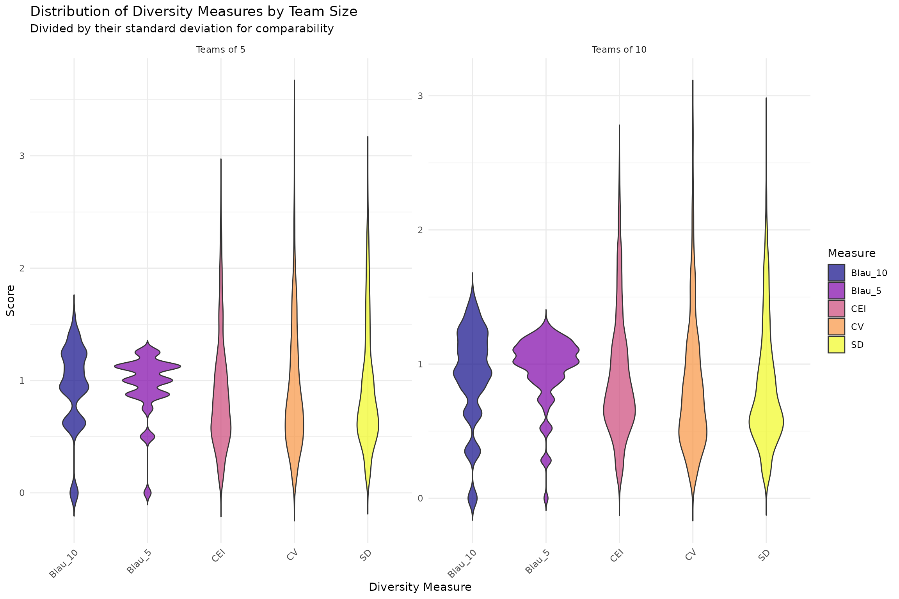
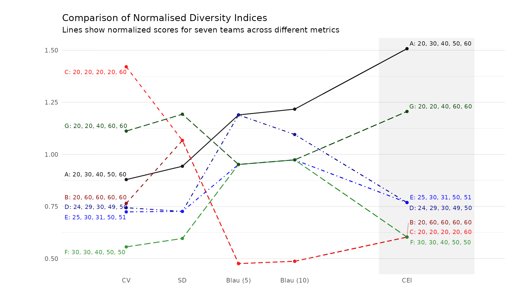
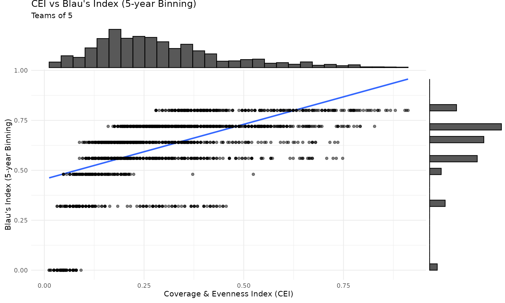
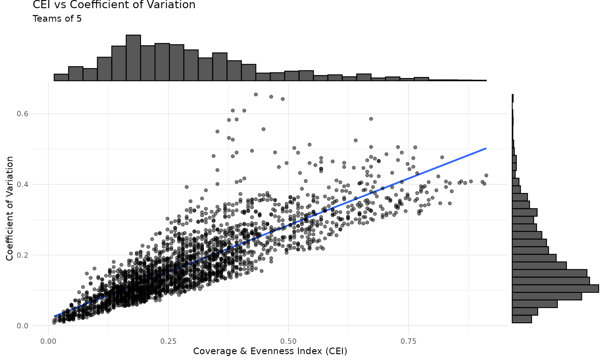
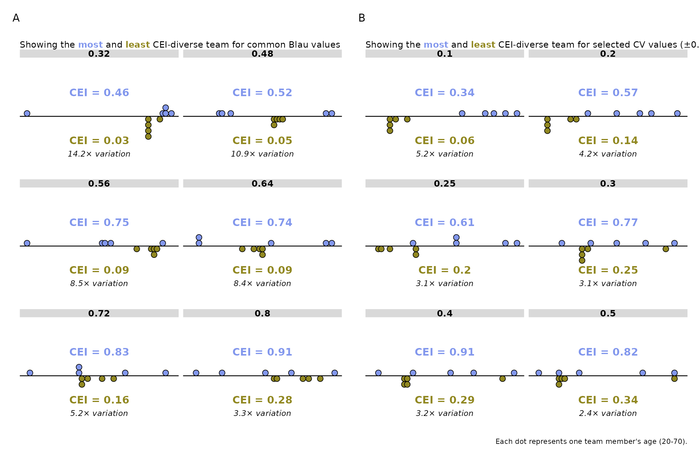

Comparing metrics for continuous attributes
Source:vignettes/articles/metrics_comparison.Rmd
metrics_comparison.Rmd
# Prefer the development version when rendering from the package repo.
pkg_root <- tryCatch(rprojroot::find_package_root_file(), error = function(e) NULL)
if (!is.null(pkg_root) && requireNamespace("devtools", quietly = TRUE)) {
devtools::load_all(pkg_root, quiet = TRUE)
} else {
library(divMetrics)
}
library(dplyr)
#>
#> Attaching package: 'dplyr'
#> The following objects are masked from 'package:stats':
#>
#> filter, lag
#> The following objects are masked from 'package:base':
#>
#> intersect, setdiff, setequal, union
library(ggplot2)
library(purrr)
library(GGally)
library(viridis) # For color scales
#> Loading required package: viridisLite
library(ggrepel) # For text annotation in chart
library(ggtext)
library(tidyr)
library(gt) # For tables
# Load internal helper functions (not part of the public API)
cor_matrix <- divMetrics:::cor_matrix
report_cor_table <- divMetrics:::report_cor_table
line_to_vector <- divMetrics:::line_to_vector
# Source team generation helper (lives in inst/scripts, not in R/)
tg_path <- system.file("scripts", "team_generation.R", package = "divMetrics")
if (tg_path == "" && !is.null(pkg_root)) {
tg_path <- file.path(pkg_root, "inst", "scripts", "team_generation.R")
}
source(tg_path)Introduction
This analysis aims to calculate and compare diversity scores for teams of size 5 and 10, drawn from an age distribution ranging from 20 to 70. We will use the following diversity measures:
- Blau’s Index with 5-year binning
- Blau’s Index with 10-year binning
- Coefficient of Variation (CV)
- Standard Deviation (SD)
- Coverage & Evenness Index (CEI)
Generate Team Data
set.seed(123) # Set seed for reproducibility
# Use the same mix of plausible staffing patterns as in the statistical power
# vignette so both analyses rely on a consistent team-generation process.
team_profile_probs <- c(
single_cohort = 0.05,
career_ladder = 0.10,
balanced_roles = 0.35,
compact_balanced = 0.45,
tokenism = 0.05
)
generate_team <- function(size, n_teams, ...) {
generate_age_teams(size, n_teams, profile_probs = team_profile_probs, ...)
}
# Create teams of size 5 and 10 with controlled diversity
teams_size_5 <- generate_team(5, 2500)
teams_size_10 <- generate_team(10, 2500)
# Combine all teams
teams <- bind_rows(teams_size_5, teams_size_10)Calculate Diversity Scores
Calculate Scores
For clarity, we calculate each metric separately and then join them.
Alternatively, you could use compute_all_metrics() for a
more concise approach.
# Calculate each metric separately for clarity
div_scores <- teams %>%
group_by(team_id, team_size) %>%
summarise(
CEI = compute_CEI(age, range = c(20, 70)),
Blau_5 = compute_Blau(age, bins = seq(20, 70, by = 5)),
Blau_10 = compute_Blau(age, bins = seq(20, 70, by = 10)),
CV = compute_cv(age),
SD = compute_sd(age),
group_members = paste(age, collapse = ","),
.groups = "drop"
)Visualize Diversity Score Distributions
To compare the distribution of all diversity measures across different team sizes, we use violin plots faceted by team size. This approach, using normalized scores, provides a clear visualization of the distribution shape and spread for each measure. This highlights that Blau index values are not-continuous and heavily influenced by binning choices, while CEI, CV, and SD show smooth distributions.
# Reshape data to long format for easier plotting
div_long <- div_scores %>%
# Normalize by dividing by SD
mutate(across(CEI:SD, ~c(scale(.x, center = FALSE)))) %>%
pivot_longer(
cols = CEI:SD,
names_to = "Measure",
values_to = "Value"
) %>%
mutate(
team_size = paste("Teams of", team_size) %>%
factor(levels = c("Teams of 5", "Teams of 10"))
)
# Create violin plots
ggplot(div_long, aes(x = Measure, y = Value, fill = Measure)) +
geom_violin(trim = FALSE, alpha = 0.7) +
facet_wrap(~ team_size, scales = "free") +
scale_fill_viridis(discrete = TRUE, option = "C") +
labs(
title = "Distribution of Diversity Measures by Team Size",
subtitle = "Divided by their standard deviation for comparability",
x = "Diversity Measure",
y = "Score",
fill = "Measure"
) +
theme_minimal() +
theme(axis.text.x = element_text(angle = 45, hjust = 1))
Correlation Analysis
cor_mat <- div_scores %>%
select(CEI:SD) %>%
cor_matrix()
cor_mat %>% report_cor_table()| Variable | M | SD | 1 | 2 | 3 | 4 | 5 |
|---|---|---|---|---|---|---|---|
| 1. CEI | 0.30 | 0.16 | - | ||||
| 2. Blau_5 | 0.62 | 0.16 | 0.57 [0.55, 0.58]*** | - | |||
| 3. Blau_10 | 0.48 | 0.19 | 0.72 [0.70, 0.73]*** | 0.79 [0.78, 0.80]*** | - | ||
| 4. CV | 0.17 | 0.10 | 0.81 [0.80, 0.82]*** | 0.35 [0.33, 0.38]*** | 0.53 [0.51, 0.55]*** | - | |
| 5. SD | 7.19 | 4.08 | 0.88 [0.88, 0.89]*** | 0.37 [0.34, 0.39]*** | 0.58 [0.56, 0.59]*** | 0.92 [0.92, 0.93]*** | - |
| Note. Values are Pearson correlations with 95% CIs in brackets. *** p < .001, ** p < .01, * p < .05. | |||||||
cei_cors <- cor_mat[, "CEI"]
cei_cors <- cei_cors[names(cei_cors) != "CEI"]
cei_cor_range <- range(cei_cors)Key points to note:
- CEI is related to both variety and variance-based measures, with correlation coefficients ranging from about 0.6 to 0.9.
- Blau’s index depends on the width and alignment of bins; continuous CEI avoids these binning artefacts.
However, the specific correlation values depend on the simulation parameters. As will be shown below, different team configurations can lead to substantial divergence between measures - and the extent to which these teams appear in real-world samples will influence divergences between measures.
Illustrative comparison
example_teams <- bind_rows(
tibble(ages = c(20, 30, 40, 50, 60), team = "A"),
tibble(ages = c(20, 60, 60, 60, 60), team = "B"),
tibble(ages = c(20, 20, 20, 20, 60), team = "C"),
tibble(ages = c(24, 29, 30, 49, 50), team = "D"),
tibble(ages = c(25, 30, 31, 50, 51), team = "E"),
tibble(ages = c(30, 30, 40, 50, 50), team = "F"),
tibble(ages = c(20, 20, 40, 60, 60), team = "G")
)
# Calculate metrics for each team
example_scores <- example_teams %>%
group_by(team) %>%
summarise(
CEI = compute_CEI(ages, range = c(20, 70)),
Blau_5 = compute_Blau(ages, bins = seq(20, 70, by = 5)),
Blau_10 = compute_Blau(ages, bins = seq(20, 70, by = 10)),
CV = compute_cv(ages),
SD = compute_sd(ages),
team_members = paste(ages, collapse = ", "),
.groups = "drop"
)
# Quick comparison option using built-in plotting function:
# plot_metric_comparison(example_scores,
# metrics = c("CV", "SD", "Blau_5", "Blau_10", "CEI"),
# group_var = "team",
# group_members_var = "team_members",
# title = "Comparison of Normalised Diversity Indices")
# For this analysis, we create a custom visualization with detailed
# styling:
example_scores_long <- example_scores %>%
pivot_longer(
cols = c(CV, SD, Blau_5, Blau_10, CEI),
names_to = "Index",
values_to = "Score"
) %>%
group_by(Index) %>%
mutate(Score = scale(Score, center = FALSE)) %>%
ungroup() %>%
mutate(
indicator_type = factor(
if_else(
Index %in% c("CV", "SD", "Blau_5", "Blau_10"),
"Established Indicators",
"Coverage & Evenness Index"
),
levels = c("Established Indicators", "Coverage & Evenness Index")
)
)
# Reorder factor levels for Index and create numeric x positions
# This allows lines to connect across the two indicator groups
example_scores_long <- example_scores_long %>%
mutate(
Index = factor(
Index,
levels = c("CV", "SD", "Blau_5", "Blau_10", "CEI")
),
# Map indices to numeric positions with a gap between groups
x_pos = case_when(
Index == "CV" ~ 1,
Index == "SD" ~ 2,
Index == "Blau_5" ~ 3,
Index == "Blau_10" ~ 4,
Index == "CEI" ~ 6
)
)
# Define line types and colors to highlight clusters:
line_types <- c(
"A" = "solid",
"B" = "dashed", "C" = "dashed",
"D" = "dotdash", "E" = "dotdash",
"F" = "longdash", "G" = "longdash"
)
team_colors <- c(
"A" = "black",
"B" = "darkred", "C" = "red",
"D" = "darkblue", "E" = "blue",
"F" = "forestgreen", "G" = "#004000"
)
# Create the base plot with numeric x positions to allow line connections
p <- ggplot(
example_scores_long,
aes(
x = x_pos, y = Score, group = team,
linetype = team, color = team
)
) +
geom_line(aes(linewidth = team)) +
geom_point() +
# Add subtle background sections to distinguish indicator types
annotate("rect", xmin = 0.5, xmax = 4.5, ymin = -Inf, ymax = Inf,
alpha = 0.1, fill = "white") +
annotate("rect", xmin = 5.5, xmax = 7.2, ymin = -Inf, ymax = Inf,
alpha = 0.1, fill = "#807f7f") +
scale_linetype_manual(values = line_types) +
scale_color_manual(values = team_colors) +
scale_linewidth_manual(values = c(
"A" = 0.6, "B" = 0.6, "C" = 0.6,
"D" = 0.6, "E" = 0.6, "F" = 0.6, "G" = 0.6
)) +
labs(
title = "Comparison of Normalised Diversity Indices",
subtitle = paste(
"Lines show normalized scores for seven teams",
"across different metrics"
),
x = "", y = ""
) +
theme_minimal() +
theme(
legend.position = "none",
plot.margin = margin(t = 20, r = 10, b = 20, l = 50),
panel.grid.major.x = element_blank(),
panel.grid.minor.x = element_blank()
) +
scale_x_continuous(
breaks = c(1, 2, 3, 4, 6),
labels = c("CV", "SD", "Blau (5)", "Blau (10)", "CEI"),
expand = expansion(mult = c(0.08, 0.08))
)
# Add labels on the left (at CV)
label_data_left <- example_scores_long %>%
filter(Index == "CV") %>%
select(x_pos, team, Score, team_members)
p <- p + geom_text_repel(
data = label_data_left,
aes(label = paste0(team, ": ", team_members), x = x_pos, y = Score),
nudge_x = -0.6,
vjust = 0.5,
size = 3,
direction = "y",
segment.size = 0.3,
segment.alpha = 0.5
)
# Add labels on the right (at CEI)
label_data_right <- example_scores_long %>%
filter(Index == "CEI") %>%
select(x_pos, team, Score, team_members)
p <- p + geom_text_repel(
data = label_data_right,
aes(label = paste0(team, ": ", team_members), x = x_pos, y = Score),
nudge_x = 0.6,
vjust = 0.5,
size = 3,
direction = "y",
segment.size = 0.3,
segment.alpha = 0.5
)
p
Key points to note:
- Teams B and C diverge hugely on the CV, but are identical on all other indices. This highlights that CV’s scaling by the mean captures a unique aspect that needs to be theoretically justified.
- Teams D and E substantially differ on the indices that depend on
binning
- even though E is simply one year older than D. This discontinuity highlights a key issue with binning.
- Within this example, each operationalisation of diversity results in a different ranking of teams. This highlights that the choice of measure matters (though in practice, many teams will be similar across measures).
Divergence between the measures
Next we explore where diversity measures diverge. For that, we plot the associations and identify the greatest residuals. These cases can then help identify which measure best identifies diverse teams.
Comparing Blau’s Index and CEI
Blau’s index and CEI are correlated, yet each level of Blau’s index corresponds to a range of CEI values. We explore these deviations below.
p <- div_scores %>%
filter(team_size == 5) %>%
ggplot(aes(x = CEI, y = Blau_5)) +
geom_smooth(method = "lm", se = FALSE) +
geom_point(alpha = 0.5) +
scale_color_viridis(discrete = TRUE, option = "D") +
theme_minimal() +
labs(
title = "CEI vs Blau's Index (5-year Binning)",
subtitle = "Teams of 5",
x = "Coverage & Evenness Index (CEI)",
y = "Blau's Index (5-year Binning)"
)
p %>%
ggExtra::ggMarginal(p, type = "histogram")
#> `geom_smooth()` using formula = 'y ~ x'
#> `geom_smooth()` using formula = 'y ~ x'
#> `geom_smooth()` using formula = 'y ~ x'
outliers <- div_scores %>%
filter(team_size == 5) %>%
group_by(Blau_5 = round(Blau_5, 2)) %>%
mutate(count = n()) %>%
arrange(CEI) %>%
# select the largest and smallest CEI per group
filter(CEI == max(CEI, na.rm = TRUE) | CEI == min(CEI, na.rm = TRUE)) %>%
mutate(score_type = ifelse(CEI == max(CEI, na.rm = TRUE), "max", "min")) %>%
select(CEI, Blau_5, group_members, team_size, score_type, count) %>%
ungroup() %>%
group_by(Blau_5) %>%
arrange(CEI) %>%
filter(row_number() == 1 | row_number() == n(), n() > 1) %>% # exclude if there is only 1 team (v rare), otherwise filter 1 min and 1 max
ungroup()Comparing the Coefficient of Variation and CEI
p <- div_scores %>%
filter(team_size == 5) %>%
ggplot(aes(x = CEI, y = CV)) +
geom_smooth(method = "lm", se = FALSE) +
geom_point(alpha = 0.5) +
scale_color_viridis(discrete = TRUE, option = "D") +
theme_minimal() +
labs(
title = "CEI vs Coefficient of Variation",
subtitle = "Teams of 5",
x = "Coverage & Evenness Index (CEI)",
y = "Coefficient of Variation"
)
p %>%
ggExtra::ggMarginal(p, type = "histogram")
#> `geom_smooth()` using formula = 'y ~ x'
#> `geom_smooth()` using formula = 'y ~ x'
#> `geom_smooth()` using formula = 'y ~ x'
outliers <- div_scores %>%
filter(team_size == 5) %>%
group_by(CV = round(2*CV, 1)/2, team_size) %>%
mutate(count = n()) %>%
arrange(CV) %>%
# select the largest and smallest CEI per group
filter(CEI == max(CEI, na.rm = TRUE) | CEI == min(CEI, na.rm = TRUE)) %>%
mutate(score_type = ifelse(CEI == max(CEI, na.rm = TRUE), "max", "min")) %>%
select(CEI, CV, group_members, team_size, score_type, count) %>%
ungroup() %>%
group_by(CV) %>%
arrange(CEI) %>%
filter(row_number() == 1 | row_number() == n(), n() > 1) %>% # exclude if there is only 1 team (v rare), otherwise filter 1 min and 1 max
ungroup()Combined Divergence Visualization
Figure 1 below shows, for common values of Blau’s Index (Panel A) and the Coefficient of Variation (Panel B), teams with the highest and lowest CEI. This highlights that:
- For Blau’s Index: CEI can vary substantially (up to 4-fold) even when Blau is constant, reflecting different distributions with the same binned categories.
- For CV: Particularly for intermediate CV values, CEI can vary widely. Towards high CV values, the relationship can reverse as evenness drops.
library(patchwork)
(p_div_blau + labs(title = "")) + (p_div_cv + labs(title = "")) +
plot_layout(ncol = 2) + plot_annotation(tag_levels = 'A')
Decomposing CEI for Divergent Teams
Table 1 breaks down CEI into its Coverage (C) and Evenness (E) components for the teams shown in Figure 1. This reveals whether divergences are driven by differences in spread across the attribute range (Coverage) or uniformity of distribution (Evenness).
# Combine both tables with clear section headers
combined_table_data <- bind_rows(
blau_table_data %>%
rename(Group = Blau_Group) %>%
mutate(
Metric = "Blau Index",
Group = as.character(Group),
.before = 1
),
cv_table_data %>%
rename(Group = CV_Group) %>%
mutate(Metric = "Coefficient of Variation", .before = 1)
)
combined_table_data %>%
gt(groupname_col = "Metric", rowname_col = "Group") %>%
tab_header(
title = "Coverage & Evenness Index (CEI) Components",
subtitle = paste(
"Broken down by Coverage (C) and Evenness (E) for teams",
"shown in Figure 1"
)
) %>%
cols_label(
Type = "Type",
CEI = "CEI",
C = "Coverage (C)",
E = "Evenness (E)"
) %>%
fmt_number(
columns = c(CEI, C, E),
decimals = 3
) %>%
tab_options(
row_group.as_column = FALSE,
container.overflow.x = TRUE
)| Coverage & Evenness Index (CEI) Components | ||||
| Broken down by Coverage (C) and Evenness (E) for teams shown in Figure 1 | ||||
| Type | CEI | Coverage (C) | Evenness (E) | |
|---|---|---|---|---|
| Blau Index | ||||
| 0.32 | Low CEI | 0.032 | 0.080 | 0.400 |
| 0.32 | High CEI | 0.456 | 1.000 | 0.456 |
| 0.48 | Low CEI | 0.048 | 0.060 | 0.800 |
| 0.48 | High CEI | 0.524 | 0.780 | 0.672 |
| 0.56 | Low CEI | 0.088 | 0.140 | 0.629 |
| 0.56 | High CEI | 0.748 | 0.940 | 0.796 |
| 0.64 | Low CEI | 0.088 | 0.140 | 0.629 |
| 0.64 | High CEI | 0.736 | 0.920 | 0.800 |
| 0.72 | Low CEI | 0.160 | 0.220 | 0.727 |
| 0.72 | High CEI | 0.828 | 0.940 | 0.881 |
| 0.8 | Low CEI | 0.280 | 0.320 | 0.875 |
| 0.8 | High CEI | 0.912 | 0.960 | 0.950 |
| Coefficient of Variation | ||||
| 0.1 | Low CEI | 0.064 | 0.120 | 0.533 |
| 0.1 | High CEI | 0.336 | 0.380 | 0.884 |
| 0.2 | Low CEI | 0.136 | 0.200 | 0.680 |
| 0.2 | High CEI | 0.572 | 0.620 | 0.923 |
| 0.25 | Low CEI | 0.196 | 0.260 | 0.754 |
| 0.25 | High CEI | 0.608 | 0.720 | 0.844 |
| 0.3 | Low CEI | 0.248 | 0.580 | 0.428 |
| 0.3 | High CEI | 0.772 | 0.780 | 0.990 |
| 0.4 | Low CEI | 0.288 | 0.680 | 0.424 |
| 0.4 | High CEI | 0.908 | 0.940 | 0.966 |
| 0.5 | Low CEI | 0.344 | 0.800 | 0.430 |
| 0.5 | High CEI | 0.820 | 0.940 | 0.872 |
Sensitivity to range specification
CEI uses the width of the theoretical range (the denominator of the coverage component) but not its absolute location. This implies two practically useful properties:
- Translation invariance: shifting both endpoints by the same amount (but keeping the range width constant) leaves CEI unchanged.
- Width sensitivity: specifying a substantially wider theoretical range compresses CEI values (lower coverage for the same observed spread). When the same range is applied to all teams, this changes absolute values but not rankings (it rescales all CEI values by the same constant factor).
team_ceis <- teams %>%
group_by(team_id) %>%
summarise(ages = list(age), .groups = "drop")
# 1) Translation invariance: same span (50 years), different endpoints
translation_ranges <- tibble::tibble(
label = c("20–70 (reference)", "0–50 (shifted)", "40–90 (shifted)"),
lower = c(20, 0, 40),
upper = c(70, 50, 90)
)
cei_translation <- team_ceis
for (i in seq_len(nrow(translation_ranges))) {
current <- translation_ranges[i, ]
cei_translation <- cei_translation %>%
mutate(
!!current$label := purrr::map_dbl(
ages,
compute_CEI,
range = c(current$lower, current$upper)
)
)
}
translation_mat <- cei_translation %>%
select(all_of(translation_ranges$label)) %>%
cor(use = "complete.obs") %>%
round(3)
max_abs_diff <- max(abs(cei_translation[[translation_ranges$label[1]]] -
cei_translation[[translation_ranges$label[2]]]),
na.rm = TRUE)
cat("Translation invariance check (all spans = 50 years):\n")
#> Translation invariance check (all spans = 50 years):
print(translation_mat)
#> 20–70 (reference) 0–50 (shifted) 40–90 (shifted)
#> 20–70 (reference) 1 1 1
#> 0–50 (shifted) 1 1 1
#> 40–90 (shifted) 1 1 1
cat("\nMax |CEI(reference) - CEI(shifted)|:", signif(max_abs_diff, 3), "\n\n")
#>
#> Max |CEI(reference) - CEI(shifted)|: 0
# 2) Width sensitivity: wider theoretical ranges (all include 20–70)
width_ranges <- tibble::tibble(
label = c("20–70 (50y)", "15–75 (60y)", "10–80 (70y)", "0–100 (100y)"),
lower = c(20, 15, 10, 0),
upper = c(70, 75, 80, 100)
)
cei_width <- team_ceis
for (i in seq_len(nrow(width_ranges))) {
current <- width_ranges[i, ]
cei_width <- cei_width %>%
mutate(
!!current$label := purrr::map_dbl(
ages,
compute_CEI,
range = c(current$lower, current$upper)
)
)
}
width_cols <- cei_width %>% select(all_of(width_ranges$label))
width_summary <- tibble::tibble(
Range = width_ranges$label,
`Range width (years)` = width_ranges$upper - width_ranges$lower,
`Correlation with 20–70` = sapply(width_ranges$label, function(lbl) {
cor(width_cols[[lbl]], width_cols[["20–70 (50y)"]], use = "complete.obs")
}),
`Rank correlation with 20–70` = sapply(width_ranges$label, function(lbl) {
cor(width_cols[[lbl]], width_cols[["20–70 (50y)"]], method = "spearman", use = "complete.obs")
}),
`Mean CEI` = sapply(width_ranges$label, function(lbl) mean(width_cols[[lbl]], na.rm = TRUE))
) %>%
mutate(across(c(`Correlation with 20–70`, `Rank correlation with 20–70`, `Mean CEI`), ~ round(.x, 3)))
width_summary %>%
gt() %>%
tab_header(
title = "CEI sensitivity to the width of the specified range",
subtitle = "Range width rescales CEI (mean changes) but rankings are unchanged when the same range is used for all teams"
)| CEI sensitivity to the width of the specified range | ||||
| Range width rescales CEI (mean changes) but rankings are unchanged when the same range is used for all teams | ||||
| Range | Range width (years) | Correlation with 20–70 | Rank correlation with 20–70 | Mean CEI |
|---|---|---|---|---|
| 20–70 (50y) | 50 | 1 | 1 | 0.296 |
| 15–75 (60y) | 60 | 1 | 1 | 0.246 |
| 10–80 (70y) | 70 | 1 | 1 | 0.211 |
| 0–100 (100y) | 100 | 1 | 1 | 0.148 |
Summary
In this analysis, we generated teams of two different sizes (5 and 10) with a comprehensive range of member distributions. Five diversity metrics—CEI, Blau’s Index (with 5-year and 10-year binning), Coefficient of Variation (CV), and Standard Deviation (SD)—were computed for each team.
Key Findings:
Distribution of Diversity Measures: Violin plots revealed the distribution and spread of each diversity measure across different team sizes. While Blau’s index is very clustered around a low number of unique values, all other distributions are smooth and roughly normal.
Correlation Analysis: The correlation matrix indicated strong correlations between certain measures (e.g., CV and SD) while others showed weaker relationships. This suggests that while some diversity metrics capture similar aspects of diversity, others may provide unique insights.
Measures Divergence: A comparison of 7 specific teams highlighted that each index can result in a unique ordering, so that the choice matters. Similarly, looking at the residuals between CEI and Blau’s Index or CV, we identified the teams where the measures diverged the most - and would argue that in all these cases, CEI indicates an appropriate difference between the teams.